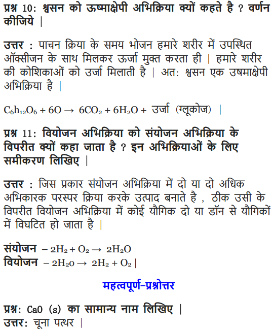

NCERT Solutions for Class 10 Science Chapter 1 Chemical Reactions and Equations includes all the important topics with detailed explanation that aims to help students to understand the concepts better. Students who are preparing for their Class 10 exams must go through NCERT Solutions for Class 10 Science Chapter 1 Chemical Reactions and Equations. All Chapter 1 – Chemical Reactions and Equations Exercise Questions with Solutions to help you to revise complete Syllabus and Score More marks.
You can also Download NCERT Solution Class 10 science to help you to revise complete Syllabus and score more marks in your examinations.
Students can also find NCERT intext, exercises and back of chapter questions. Also working on Class 10 Science Chapter 1 Chemical Reactions and Equations NCERT Solutions will be most helpful to the students to solve their Homeworks and Assignments on time. Students can also download NCERT Solutions for Class 10 Science Chapter 1 Chemical Reactions and Equations PDF to access them even in offline mode. Not only that, but you will also have access to all the FREE PDFs of study materials and solutions along with absolutely FREE Online Tests to enhance your problem-solving speed.
NCERT Solutions for Class 10 Science Chapter 1 – Chemical Reactions and Equations NCERT Solutions for class 10 Science provided herein are designed by our subject matter experts in a simple and precise manner.
NCERT Solutions for Class 10 Science Chapter 1 Chemical Reactions and Equations
Before getting into the details of NCERT Solutions For Class 10 Science Chapter 1 Chemical Reactions And Equations, let’s have an overview of a list of topics and subtopics under Class 10 Science Chapter 1 Chemical Reactions And Equations:
- Chemical Reactions And Equations
- Chemical Equations
- Types Of Chemical Reactions
- Have You Observed The Effects Of Oxidation Reactions In Everyday Life? Y Life?
Free download NCERT Solutions for Class 10 Science Chapter 1 Chemical Reactions and Equations PDF in Hindi Medium as well as in English Medium for CBSE, Uttarakhand, Bihar, MP Board, Gujarat Board, and UP Board students, who are using NCERT Books based on updated CBSE Syllabus for the session 2019-20.
- रासायनिक अभिक्रियाएँ और समीकरण कक्षा 10 विज्ञान हिंदी में
- Class 10 Chemical Reactions and Equations Mind Map
- Chemical Equation
- Oxidation in Everyday Life
- Types of Chemical Reactions
NCERT Solutions for Class 10 Science Chapter 1 Intext Questions
Page Number: 6
Question 1
Why should a magnesium ribbon be cleaned before burning in air ?
Answer:
Magnesium gets covered with a layer of magnesium oxide when kept in air for a long time. This layer hinders the burning of magnesium. Hence, it is to be cleaned before burning.
Question 2
Write the balanced equation for the following chemical reactions.
(i) Hydrogen + Chlorine → Hydrogen chloride
(ii) Barium chloride + Aluminium sulphate → Barium sulphate + Aluminium chloride
(iii) Sodium + Water → Sodium hydroxide + Hydrogen
Answer:
(i) H2 + Cl2 → 2HCl
(ii) 3 BaCl2 + Al2(SO4)3 → BaSO4 + 2 AlCl3
(iii) 2Na + 2H2O → 2NaOH + H2↑
Question 3
Write a balanced chemical equation with state symbols for the following reactions :
(i) Solutions of barium chloride and sodium sulphate in water react to give insoluble barium sulphate and the solution of sodium chloride.
(ii) Sodium hydroxide solution (in water) reacts with hydrochloric acid solution (in water) to produce sodium chloride solution and water.
Answer:
(i) BaCl2 (aq) + Na2SO4 (aq) → BaSO4(s) + 2NaCl (aq)
(ii) NaOH (aq) + HCl(aq) → NaCl(aq) + H2O(l)
Page Number: 10
Question 1
A solution of a substance ‘X’ is used for white washing.
(i) Name the substance ‘X’ and write its formula.
(ii) Write the reaction of the substance ‘X’ named in (i) above with water.
Answer:
(i) The substance whose solution in water is used for white washing is calcium oxide (or quick lime). Its formula is CaO.

Question 2
Why is the amount of gas collected in one of the test tubes in text book Activity 1.7 (i.e., electrolysis of water) double of the amount collected in the other? Name this gas. [CBSE 2015 (Delhi)]
Answer:
In Activity 1.7, water is electrolysed to give H2 gas at one electrode and O2 gas at the other electrode.
2H2O(l) → 2H2(g) + O2(g)
Thus two molecules of water on electrolysis give two molecules of hydrogen gas and one molecule of oxygen gas or in other words the amount of hydrogen gas collected would be double than that of oxygen gas.
Page Number: 13
Question 1
Why does the colour of copper sulphate solution change when an iron nail is dipped in it ?
OR
An iron nail is dipped in the solution of copper sulphate for about 30 minutes. State the change in colour observed. Give reason for the change. [CBSE 2015 (Delhi)]
Answer:
When an iron nail is dipped in copper sulphate solution, the displacement reaction takes place. The colour of copper sulphate solution fades due to the formation of light green solution of iron sulphate.

Question 2
Give an example of a double displacement reaction other than the one given in Activity 1.10 (NCERT Text Book).
Answer:
Sodium hydroxide and hydrochloric acid react to form sodium chloride and water.

Question 3
Identify the substances that are oxidised and the substances which are reduced in the following reactions.
(i) 4Na(s) + O2(g) → 2Na2O(s)
(ii) CuO (s) + H2(g) → Cu (s) + H2O(l)
Answer:
(i) Substances oxidised is Na as it gains oxygen and oxygen is reduced.
(ii) Substances reduced is Cu as hydrogen is oxidised as it gains oxygen.
NCERT Solutions for Class 10 Science Chapter 1 Textbook Chapter End Questions
Question 1
Which of the statements about the reaction below are incorrect ?
2 PbO(s) + C(s) → 2Pb (s) + CO2(g)
(a) Lead is getting reduced.
(b) Carbon dioxide is getting oxidised.
(c) Carbon is getting oxidised.
(d) Lead oxide is getting reduced.
(i) (a) and (b)
(ii) (a) and (c)
(iii) (a), (b) and (c)
(iv) All
Answer:
(i) (a) and (b)
Question 2
Fe2O3 + 2Al → Al2O3 + 2Fe
The above reaction is an example of a
(a) combination reaction
(b) double displacement reaction
(c) decomposition reaction
(d) displacement reaction
Answer:
(d) Displacement reaction.
Question 3
What happens when dilute hydrochloric acid is added to iron filings ? Tick the correct answer :
(a) Hydrogen gas and iron chloride are produced.
(b) Chlorine gas and iron hydroxide are produced.
(c) No reaction takes place.
(d) Iron salt and water are produced.
Answer:
(a) Hydrogen gas and iron chloride are produced.
Question 4
What is a balanced chemical equation ? Why should chemical equations be balanced ?
Answer:
A balanced chemical equation has an equal number of atoms of different elements in the reactants and products.
The chemical equations should be balanced to satisfy the law of conservation of mass.
Question 5
Translate the following statements into chemical equations and then balance them.
(a) Hydrogen gas combines with nitrogen to form ammonia.
(b) Hydrogen sulphide gas burns in air to give water and sulphur dioxide.
(c) Barium chloride reacts with aluminium sulphate to give aluminium chloride and a precipitate of barium sulphate.
(d) Potassium metal reacts with water to give potassium hydroxide and hydrogen gas.
Answer:
(a) 3H2 (g) + N2 (g) → 2NH3 (g)
(b) H2S (g) + 3O2 (g) → SO2 (g) + 2H2O(l)
(c) 3BaCl2 (aq) + Al2(SO4)3 (aq) → 2AlCl3 (aq) + 3BaSO4 ↓(s)
(d) 2K (s) + 2H2O (l) → 2KOH (aq) + H2 (g)
Question 6
Balance the following chemical equations :
(a) HNO3 + Ca (OH)2 → Ca (NO3)2 + H2O
(b) NaOH + H2SO4 → Na2SO4 + H2O
(c) NaCl + AgNO3 → AgCl + NaNO3
(d) BaCl2 + H2SO4 → BaSO4 + HCl
Answer:
(a) 2HNO3 + Ca(OH)2 → Ca(NO3)2 + 2H2O
(b) 2NaOH + H2SO4 → Na2SO4 + 2H2O
(c) NaCl + AgNO3 → AgCl + NaNO3
(d) BaCl2 + H2SO4 → BaSO4 + 2HCl
Question 7
Write the balanced chemical equations for the following reactions :
(a) Calcium hydroxide + Carbon dioxide → Calcium carbonate + Water
(b) Zinc + Silver nitrate → Zinc nitrate + Silver
(c) Aluminium + Copper chloride → Aluminium chloride + Copper
(d) Barium chloride + Potassium sulphate → Barium sulphate + Potassium chloride
Answer:
(a) Ca (OH)2 + CO2 → CaCO3 + H2O
(b) Zn + 2AgNO3 → Zn(NO3)2 + 2 Ag
(c) 2Al + 3 CuCl2 → 2AlCl3 + 3 Cu
(d) BaCl2 + K2SO4 → BaSO4 + 2KCl
Question 8
Write the balanced chemical equation for the following and identify the type of reaction in each case :
(a) Potassium bromide (aq) + Barium iodide (aq) → Potassium iodide (aq) + Barium
(b) Zinc carbonate(s) → Zinc oxide (s) + Carbon dioxide (g) bromide(s)
(c) Hydrogen (g) + Chloride (g) → Hydrogen chloride (g)
(d) Magnesium (s) + Hydrochloric acid (aq) → Magnesium chloride (aq) + Hydrogen (g)
Answer:
(a) 2KBr (aq) + Bal2(aq) → 2Kl(aq) + BaBr2(s)
Type : Double displacement reaction
(b) ZnCO3 (s) → ZnO (s) + CO2 (g)
Type : Decomposition reaction
(c) H2 (g) + Cl2 (g) → 2HCl(g)
Type : Combination reaction
(d) Mg (s) + 2HCl (aq) → MgCl2 (aq) + H2 (g)
Type : Displacement reaction
Question 9
What does one mean by exothermic and endothermic reactions ? Give examples.
Answer:
Exothermic reactions : Those reactions in which heat is evolved are known as exothermic reactions. An exothermic reaction is indicated by writing “+ Heat”on the products side of an equation.
Example :
(i) C (s) + O2 (g) → CO2 (g) + Heat
(ii) N2 (g) + 3H2 (g) → 2NH3 (g) + Heat
Endothermic reactions : Those reactions in which heat is absorbed are known as endothermic reactions. An endothermic reaction is usually indicated by writing “Heat” on the product side of a chemical equation.
Examples :
(i) C (s) + 2S (s) → CS2 (l) – Heat
(ii) N2 (g) + O2 (g) → 2NO(g) – Heat
Question 10
Why is respiration considered an exothermic reaction ? Explain.
Answer:
Respiration is an exothermic process because during respiration glucose combines with oxygen in the cells of our body to form carbon dioxide and water along with the production of energy.

Question 11
Why are decomposition reactions called the opposite of combination reactions? Write equations for these reactions.
Answer:
In a decomposition reaction, a single compound breaks down to produce two or more simpler substances.
For example:

While, in a combination reaction, two or more substances simply combine to form a new substance.
For example:

Question 12
Write one equation each for the decomposition reactions where energy is supplied in the form of heat, light or electricity.
OR
Decomposition reactions require energy either in the form of heat or light or electricity for breaking down the reactants. Write one equation each for decomposition reactions where energy is supplied in the form of heat, light and electricity. [CBSE 2015 (Delhi)]
Answer:

Question 13
What is the difference between displacement and double displacement reactions? Write equations for these reactions.
Answer:
In displacement reactions, a more reactive metal displaces a less reactive metal from its solution. For example,
Fe(s) + CuSO4(aq) → Cu(s) + FeSO4(aq)
This is a displacement reaction where iron displaces copper from its solution.
In double displacement reactions, two reactants in solution exchange their ions. For example,
AgNO3(aq) + NaCl (aq) → AgCl(s) + NaNO3 (aq)
This is a double displacement reaction where silver nitrate and sodium chloride exchange Cl– and NO3– ions between them.
Question 14
In the refining of silver, the recovery of silver from silver nitrate solution involved displacement by copper metal. Write down the reaction involved.
Answer:

Question 15
What do you mean by a precipitation reaction ? Explain by giving examples.
Answer:
A reaction in which an insoluble solid called precipitate is formed that separates from the solution is called a precipitation reaction.
Example : When a solution of iron (III) chloride and ammonium hydroxide are mixed, a brown precipitate of iron (III) hydroxide is formed.

Question 16
Explain the following in terms of gain or loss of oxygen with two examples each:
(a) Oxidation and
(b) Reduction.
Answer:
(a) Oxidation : The addition of oxygen to a substance is called oxidation.
Example :
(i) S(s) + O2(g) → SO2(g) (Addition of oxygen to sulphur)
(ii) 2Mg(s) + O2 (g) → 2MgO(s) (Addition of oxygen to magnesium)
(b) Reduction : The removal of oxygen from a substance is called reduction.
Example: (i) CuO + H2 \(\underrightarrow { Heat }\) Cu + H2O
Here, copper oxide is being reduced to copper because oxygen gets removed from copper oxide.
(ii) ZnO + C → Zn + CO
Here, zinc oxide is being reduced to zinc because oxygen gets removed from zinc oxide.
Question 17
A shiny brown coloured element ‘X’ on heating in air becomes black in colour. Name the element ‘X’ and the black coloured compound formed.
Answer:
Element ‘X’ is copper (Cu).
The black coloured compound is copper oxide (CuO). The reaction involved is

Question 18
Why do we apply paint on iron articles ?
Answer:
Paint does not allow iron articles to come in contact with air, water and saves iron articles from damage due to rusting.
Question 19
Oil and fat containing food items are flushed with nitrogen. Why ?
Answer:
To keep food items fresh and save from getting oxidised, food items are flushed with nitrogen.
Question 20
Explain the following terms with one example each (a) Corrosion, (b) Rancidity.
Answer:
(a) Corrosion : It is the process in which metals are eaten up gradually by the action of air, moisture or a chemical (such as an acid) on their surface.
Example : When iron is exposed to moist air for a long period of time, its surface acquires a coating of a brown, flaky substance called rust. Rust is mainly hydrated iron (III) oxide [Fe2O3.xH20].

(b) Rancidity : The condition produced by aerial oxidation of fats and oils in foods marked by unpleasant smell and taste is called rancidity.
Rancidity spoils the food materials prepared in fats and oils which have been kept for a considerable time and makes them unfit for eating.
Rancidity can be prevented by adding anti-oxidants to foods containing fats and oils. It can also be prevented by flushing fat and oil containing foods with nitrogen before sealing.
| Board | CBSE |
| Textbook | NCERT |
| Class | Class 10 |
| Subject | Science |
| Chapter | Chapter 1 |
| Chapter Name | Chemical Reactions and Equations |
| Number of Questions Solved | 28 |
| Category | NCERT Solutions |
NCERT Solutions for Class 10 Science Chapter 1 Chemical Reactions and Equations
NCERT Solutions for Class 10 Science (Chemistry) Chapter 1 Chemical Reactions and Equations are part of NCERT Solutions for Class 10 Science. Here we have given Class 10 Science NCERT Solutions Chapter 1.
Question 1
Which of the given statements about the reaction below are incorrect?
a. Lead is getting reduced
b. Carbon dioxide is getting oxidised
c. Carbon is getting oxidised
d. Lead oxide is getting reduced
(i) (a) and (b)
(ii) (a) and (c)
(iii) (a), (b) and (c)
(iv) all
Solution:
(i) (a) and (b)
Question 2
The above reaction is an example of a
(i). Combination reaction
(ii). Double displacement reaction
(iii). Decomposition reaction
(iv). Displacement reaction
Solution:
(iv) Displacement reaction
Question 3
What happens when dilute hydrochloric acid is added to iron fillings? Tick the correct answer.
a. Hydrogen gas and iron chloride are produced
b. Chlorine gas and iron hydroxide are produced
c. No reaction takes place
d Iron salt and water are produced
Solution:
Hydrogen gas and iron chloride are produced
Download NCERT Solutions for Class 10 Science Chapter 1 Chemical Reactions and Equations PDF
Question 4
What is a balanced chemical equation? Why should chemical equations be balanced?
Solution:
An equation for a chemical reaction is an equation in which the number of atoms for each element in the reaction and the total charge is the same for both the reactants and the products. In other words, the mass and the charge are balanced on both sides of the reaction.
Question 5
Translate the following statements into chemical equations and then balance them.
a. Hydrogen gas combines with nitrogen to form ammonia
b. Hydrogen sulfide gas burns in air to give water and sulfur dioxide
c. Barium chloride reacts with Aluminium sulfate to give Aluminium chloride and a precipitate of barium sulphate
d. Potassium metal reacts with water to give a potassium hydroxide and hydrogen gas
Solution:
a. 3H2 + N2 → 2NH3
b. 2H2S + 3O2 → 2H2O + 2SO2
c. 3BaCl2 + Al2(SO4)3 → 2AlCl3 + 3BaSO4
d. 2K + 2H2O → 2KOH + H2
Question 6
Balance the following chemical equations.
a. HNO3 + Ca(OH)2 → Ca(NO3)2 + H2O
b.NaOH + H2SO4 → Na2SO4 + H2O
C. NaCl + AgNO3 → AgCl + NaNO3
d. BaCl2 + H2SO4 → BaSO4 + HCl
Solution:
a. 2HNO3 + 2Ca(OH)2 → Ca(NO3)2 + 2H2O
b. 6NaOH + 3H2SO4 → 3Na2SO4 + 6H2O
C. NaCl + AgNO3 → AgCI + NaNO3
d. BaCl2 + H2SO4 → BaSO4 + 2HCl
Question 7
Write the balanced chemical equations for the following reactions:
(a) Calcium hydroxide + Carbon dioxide → Calcium carbonate + Water(b) Zinc + Silver nitrate → Zinc nitrate + Silver(c) Aluminium + Copper chloride → Aluminium chloride + Copper(d) Barium chloride + Potassium sulphate → Barium sulphate + Potassium chlorideAnswer:(a) Ca (OH)2 + CO2 → CaCO3 + H2O(b) Zn + 2AgNO3 → Zn(NO3)2 + 2 Ag(c) 2Al + 3 CuCl2 → 2AlCl3 + 3 Cu(d) BaCl2 + K2SO4 → BaSO4 + 2KCl
Question 8
Write the balanced chemical equation for the following and identify the type of reaction of each case.
Solution:
a. 2KBr + BaI2 → 2KI + BaBr2 — Double Displacement reaction
b. ZnCO3 → ZnO + CO2 — Decomposition reaction
c. H2 + Cl2 → 2HCl — Combination reaction
d. Mg + 2HCl → MgCl2 + H2 — Displacement reaction
Question 9
What is meant by exothermic and endothermic reactions? Give examples.
Solution:
An exothermic reaction is one that releases heat.
If 1 mole of N2 molecule reacts with 1 mole of O2 molecule, the heat of 184 KJ has to be supplied to initiate the reaction to give 1 mole of NO molecule. This means that the bonds between N – N and O – O are so strong that they do not break easily. N2 has triple covalent bond between the two N atoms. O2 has a double covalent bond. Thus energy has to be put into the reaction to break the strong bonds. Thus the above reaction is a good example of an endothermic reaction.
Question 10
Why is respiration considered an exothermic reaction?
Solution:
During respiration, glucose combines with oxygen in the cells of our body to form carbon dioxide and water along with the production of energy.
Glucose + oxygen → carbon dioxide + water + energy
It is an exothermic reaction, because energy is produced during this process.
Question 11
Why are decomposition reactions called the opposite of combination reactions? Write equations for decomposition reactions.
Solution:
Essentially, decomposition reactions are the opposite of combination reactions. A compound decomposes (i.e., “splits-up”) into two or more compounds and/or elements. For example, mercury (II) oxide will, decompose into mercury metal and oxygen, upon heating:
2HgO → 2Hg + O2
Since heat had to be added to make this reaction occur, it is an endothermic reaction. Most decomposition reactions are endothermic. Another example of decomposition reaction is the heating of calcium carbonate (sea shells, chalk):
Question 12
Write one equation each for decomposition reactions in which energy is supplied in the form of heat, light or electricity?
Solution:
When calcium carbonate is heated, it decomposes to give calcium oxide and carbon dioxide:
Question 13
What is the difference between displacement and double displacement reactions? Write relevant equations for the above?
Solution:
The difference between the displacement and double displacement reactions is that in a displacement reaction one element displaces another by virtue of it being more reactive whereas in a double displacement two anions and two cations switch places between two compounds respectively.
For example:
CuSO4 (aq) + Zn(s) → ZnSO4 + Cu(s)
Blue copper sulphate solution reacting with solid zinc will give rise to colourless zinc sulphate solution and solid copper. Thus Zn displaces Cu in the salt form. Zn is more reactive than Cu.
An example of double displacement reaction is the reaction between sodium carbonate and calcium chloride, both in aqueous
Solution:
Na2CO3 (aq) + CaCl2 (aq) → CaCO3 (ppt) + 2NaCl(aq)
Question 14
In the refining of silver, the recovery of silver from silver nitrate solution involves displacement by copper metal. Write down the reaction involved.
Solution:
Question 15
What do you mean by a precipitation reaction? Explain by giving examples:
Solution:
A precipitation reaction is a reaction in which soluble ions in separate solutions are mixed together to form an insoluble compound that settles out of solution as a solid. This insoluble compound is called a precipitate.
An example of a precipitation reaction
Aqueous silver nitrate (AgNO3), when added to a solution containing potassium chloride (KCl), precipitates a white solid, and silver chloride is observed.
AgNO3 (aq) + KCl(aq) → AgCl(s) + KNO3(aq)
The silver chloride (AgCl) has formed a solid, which is observed as a precipitate.
Question 16
A shiny brown colored element ‘X’ on heating in the air becomes black in color. Name the element ‘X’ and the black coloured compound formed.
Solution:
The shiny brown colored element X is copper metal (Cu). When copper metal is heated in air, it forms a black colored compound copper oxide. So, the black colored compound is the copper oxide or copper (II) oxide, CuO.
Question 17
Why do we apply paint on iron articles?
Solution:
Rust is a soft and porous substance, which gradually falls from the surface of an iron object, and then the iron below starts rusting. Thus, rusting of iron (or corrosion of iron) is a continuous process which, if not prevented in time, eats up the whole iron object. So, when we apply paint on iron articles it reduces the rusting of iron.
Question 18
Oil and fat containing food items are flushed with nitrogen. Why?
Solution:
Packaging fat and oil containing foods in nitrogen gas can prevent rancidity. When the fat and oil present in food materials gets oxidised (in air), their oxidation products have an unpleasant smell and taste. When it is surrounded by unreactive gas, nitrogen, there is no oxygen (of air) to cause its oxidation and make it rancid.
Question 19
Explain the following terms with one example each.
a. Corrosion
b. Rancidity
Solution:
a. Corrosion is the process in which metals are eaten up gradually by the action of air, moisture or a chemical on their surface. Corrosion is caused mainly by the oxidation of metals by the oxygen of air.
Example: Rusting of iron is the most common form of corrosion. When an iron object is left in damp air for a considerable period of time, it gets covered with a red-brown flaky substance called ‘rust’. This is called rusting of iron.
b. The condition produced by aerial oxidation of fat and oil in food which is marked by an unpleasant smell and taste is called rancidity.
Example: Rancidity can be retarded by keeping food in a refrigerator.
The refrigerator has a low temperature inside it. When the food is kept in a refrigerator, the oxidation of fat and oil in it is slowed down due to low temperature. So, the development of rancidity due to oxidation is retarded.
Question 20
Why should a magnesium ribbon be cleaned before burning in air?
Solution:
To remove the oxide layer and facilitates rapid burning.
Question 21
Write the balanced equation for the following chemical reactions.
i. Hydrogen + Chloride → Hydrogen chloride
ii. Barium chloride + Aluminium sulphate → Barium sulphate + Aluminium chloride
iii. Sodium + water → Sodium hydroxide + Hydrogen
Solution:
i. H2 + Cl2 → 2HCl
ii. 3BaCl2 + Al2(SO4)3 → 3BaSO4 + 2AlCl3
iii. 2Na + 2H2O → 2NaOH + H2
Question 22
Write a balanced chemical equation and state symbols for the following reactions.
a. Solutions of barium chloride and sodium sulphate in water react to give insoluble barium sulphate and the solution of sodium chloride
b. Sodium hydroxide solution (in water) reacts with hydrochloric acid solution (in water) to produce sodium chloride solution and water.
Solution:
Question 23
A solution of a substance ‘X’ is used for white washing.
Name the substance ‘X’ and write its formula.
(i) Write the reaction of the substance ‘X; named in (ii) above with water
Solution:
Question 24
Why does the colour of copper sulphate solution change when an iron nail is dipped into it?
Solution:
In this reaction, iron displaces copper from copper sulphate solution. The deep blue colour of copper sulphate solution fades due to the formation of light green solution of iron sulphate. A red-brown coating of copper metal is formed on the surface of the iron metal. This displacement reaction occurs because iron is more reactive than copper.
Question 25
Identify the substances that are oxidised and the substances that are reduced in the following reactions.
i. 4Na(s) + O2 (g) → 2Na2O(s)
ii. CuO(s) + H2(g) → Cu(s) + H2O(l)
Solution:
i. 4Na(s) + O2 (g) → 2Na2O(s)
Here oxygen is added to sodium. The addition of oxygen is Called oxidation. So the substance that is oxidized is sodium Na.
ii. CuO(s) + H2(g) → Cu(s) + H2O(l)
In this reaction, copper oxide (CuO) gives the oxygen required for the oxidation of hydrogen; therefore, copper oxide is the oxidizing agent. Hydrogen is responsible for removing oxygen from copper oxide; therefore, hydrogen is the reducing agent here.
NCERT Solutions for Class 10 Science Chapter 1 (MCQs) [1 Mark each]
Question 1.
When crystals of lead nitrate are heated strongly in a dry test tube
(a) crystals immediately melt
(b) a brown residue is left
(c) white fumes appear in the test tube
(d) a yellow residue is left
Answer:
(b)Pungent smelling, brown fumes are evolved due to NO2 gas and brown coloured residue of lead oxide (PbO) is left.
Question 2.
A dilute ferrous sulphate solution was gradually added to the beaker containing acidified permanganate solution. The light purple colour of the solution fades and finally disappears. Which of the following is the correct explanation for the observation? [NCERT Exemplar]
(a) KMnO4 is an oxidising agent, it oxidises FeSO4
(b) FeSO4 acts as an oxidising agent and oxidises KMnO4
(c) The colour disappears due to dilution, no reaction is involved
(d) KMnO4 is an unstable compound and decomposes in the presence of FeSO4 to a colourless compound
Answer:
(a)Potassium permanganate (KMnO4) in the presence of dil. H2SO4, i.e. in acidic medium, acts as a strong oxidising agent. In acidic medium, KMnO4 oxidises ferrous sulphate to ferric sulphate.
Question 3.
Dilute hydrochloric acid is added to granulated zinc taken in a test tube. The following observations are recorded. Point out the correct observation.
(a) The surface of metal becomes shining
(b) The reaction mixture turns milky
(c) Odour of a pungent smelling gas is recorded
(d) A colourless and odourless gas is evolved
Answer:
(d)Zinc metal reacts with dil. HCl to form zinc chloride and bubbles of colourless and odourless hydrogen gas is evolved.
Question 4.
When a magnesium ribbon is burnt in air, the ash formed is
(a) black
(b) white
(c) yellow
(d) pink
Answer:
(b)When a Mg ribbon is burnt in air, the ash formed is of magnesium oxide which is white in colour.
2Mg(r) + O2(g) → 2MgO(f)
Question 5.
Three beakers labelled as A, B and C each containing 25 mL of water were taken. A small amount of NaOH, anhyd. CuSO4 and NaCl were added to the beakers A, B and C, respectively. It was observed that there was an increase in the temperature of the solutions contained in beakers A and B whereas, in case of beaker C, the temperature of the solution falls. Which one of the following statements is/are correct?
I. In beakers A and B, exothermic process has occurred.
II. In beakers A and B, endothermic process has occurred.
III. In beaker C, the exothermic process has occurred.
IV. In beaker C, endothermic process has occurred. [NCERT Exemplar]
(a) Only I
(b) Only II
(c) I and IV
(d) II and III
Answer:
(c)As in case of beakers A and B, heat is given out, so temperature became high, hence it is an exothermic reaction while in beaker C, heat is absorbed from water, so temperature falls, hence it is an endothermic process.
Question 6.
Which of the following will be required to identify the gas evolved when dilute hydrochloric acid reacts with zinc metal?
(a) Red litmus paper
(b) pH paper
(c) Lime water
(d) A burning splinter
Answer:
(d)On reacting with dil. HCl, zinc metal forms zinc chloride and hydrogen gas is evolved. Presence of hydrogen gas can be checked by a burning splinter because H4 gas burnt in a splinter with a pop sound.
Question 7.
On immersing an iron nail in CuSO4 solution for few minutes, you will observe that
(a) no reaction takes place
(b) the colour of solution fades away
(c) the surface of iron nails acquire a black coating
(d) the colour of solution changes to green
Answer:
(b)Fe(s) + CuSO4 (aq) → FeSO4 (aq) + Cu(s)
Fe is present above in the reactivity series of metals. Hence, Fe displaces Cu from CuSO4 solution. And the colour of the solution fades away. This is an example of displacement reaction.
Question 8.
What happens when ferrous sulphate crystals are heated? [CCE 2014]
(a) A gas having the smell of burning sulphur is evolved
(b) No gas is evolved
(c) Brown coloured gas is evolved
(d) Colourless and odourless gas is evolved
Answer:
(a)The green colour of ferrous sulphate crystals changes to brownish black ferric oxide and smell of burning sulphur is evolved due to SO2 and SO3.
Question 9.
The colour of the precipitate formed when barium chloride solution is mixed with sodium sulphate solution is [CCE 2014]
(a) blue
(b) black
(c) white
(d) green
Answer:
(c)This is an example of a double displacement reaction and a white precipitate of barium sulphate is formed.
Question 10.
How the colour changes when the gases after thermal decomposition of ferrous sulphate come in contact with an acidified solution of potassium dichromate?
(a) Green to orange
(b) Red to colorless
(c) Orange to green
(d) Blue to green
Answer:
(c) The color changes from orange to green due to the formation of iron (III) sulphate
NCERT Solutions for Class 10 Science Chapter 1 Chemical Reactions and Equations (Hindi Medium)

Class 10 Science Chemical Reactions and Equations Mind Map
Chemical Equation
The representation of chemical reaction by means of symbols of substances in the form of formulae is called chemical equation.
For example N2 + 3H2 ⇌ 2NH3
Balanced Chemical Equation
A balanced chemical equation has equal number of atom of each element participating in the reaction on both left and right hand sides of the reaction.
According to Law of Conservation of Mass, total mass of the elements present in the products of a chemical reaction has to be equal to the total mass of the element present in the reactants.
Balancing Of A Chemical Equation
Total No of Atoms on R.H.S = Total no of Atoms on L.H.S.
Fe3O4 T H2 → Fe + H20
[Fe] Fe3O2 + H2 → 3Fe + H20
[0] Fe3O4 + H2 → 3Fe + 4H20
[H] Fe3O4 + 4H2 → 3Fe + 4H20
Oxidation In Everyday Life
Rusting
When iron reacts with oxygen and moisture it forms a red substance called rust.
Corrosion
Metals on coming in contact with oxygen, water, acids or gases presents in air changes its surface. This is called corrosion for e.g. black coating on silver and green coating on copper.
Prevention – painting, galvanization, oiling, greasing
Rancidity
Oil and fats on exposure to air show a change in taste and smell. This property is known as rancidity.
Prevention – adding antioxidants, Vacuum packing, refrigeration, flushing food with nitrogen
Types Of Chemical Reactions
The transformation of chemical substance into a new chemical substance by making and breaking of bonds between different atom is known a chemical reaction.
Combination Reaction
When two elements or one compound and one element or two compounds combine to form a new product.
Foi example
• H2 + Cl2 → 2HCl
• Zn + CuS04 → ZnS04 + Cu
• NaOH + H2SO4 → Na2SO4 + H2O
Exothermic Reactions
Reactions producing energy are called exothermic reactions.
Most of the combination reactions are exothermic in nature.
For example : CaO + H2O → Ca(OH)2 + Heat
Oxidation
Gain of oxygen or removal of hydrogen is called oxidation eg.
• Zn + O2 → ZnO
• Mn + HCl → MnCl2 + H2
Reduction
Gain of hydrogen or removal of oxygen is called reduction.
e.g. CuO + H2 → Cu + H20
Redox Reactions
A chemical reaction in which both oxidation and reduction takes place simultaneously are called redox reactions.
For example
CuO + H2 → Cu + H2O
Decomposition Reaction
When a compound-split into two or more simple products for example
Decomposition reaction require energy either in the form of heat, light or electricity for decomposing the reactions
Endothermic Reactions
Reactions which require energy to occur are known as endothermic reactions.
For example:
Displacement Reactions
It takes place when a more reactive metal displaces a less reactive metal. For Example:
Fe + CuSO4 → FeSO4 + Cu
Double Displacement Reactions
In this reactions ions are exchanged between two reactants and forming new compounds.
Precipitation Reaction :
In some reactions, an insoluble mass is formed which is known as precipitate and such reactions are called precipitation reaction.
For Example
Na2SO4 + BaCl2 → 2NaCl + BaSO4 Precipitate
Features of NCERT Solutions for Class 10 Chapter 1 Science Chemical Reactions and Equations Students can get comprehensive practice of balancing different kinds of equations.
- Find out how to create a balanced chemical equation and learn about chemical reactions with CBSE Class 10 Chemistry learning resources.
- NCERT Solution will help you write different chemical equation appropriately Helps you get thorough practice of solving questions of varied difficulty before facing the main examination.
- Our comprehensive set of study materials acts as a perfect guide when doing homework and preparing for the examination.
- On LearnCBSE.in, our experts support you to understand chemistry with CBSE Class 10 Chemistry such as CBSE Class 10 Chemistry notes, MCQs and NCERT solutions as per the latest syllabus.
With LearnCBSE.in NCERT Solutions Learning App in your Mobile, you will get to attend FREE LIVE Master – Classes and FREE Conceptual videos. Get 100 percent accurate NCERT Book Solution for Class 10 Science Chapter 1 (Chemical Reactions and Equations) explained by expert Science teachers.
Thorough knowledge and good practice will help you score full marks on the questions asked in this chapter. Learning the fundamentals of Chemistry in CBSE Class 10 is now easy.
Now that you are provided all the necessary information regarding NCERT Solutions for 10 Science Chapter 1 Chemical Reactions and we hope this detailed NCERT Solutions are helpful. Students can also check out NCERT Books, CBSE Syllabus, CBSE Sample Papers, RD Sharma Solutions at LearnCBSE.in for free.
NCERT Solutions for Class 10 Science All Chapters
- Chapter 1 Chemical Reactions and Equations
- Chapter 2 Acids, Bases and Salts
- Chapter 3 Metals and Non-metals
- Chapter 4 Carbon and Its Compounds
- Chapter 5 Periodic Classification of Elements
- Chapter 6 Life Processes
- Chapter 7 Control and Coordination
- Chapter 8 How do Organisms Reproduce?
- Chapter 9 Heredity and Evolution
- Chapter 10 Light Reflection and Refraction
- Chapter 11 Human Eye and Colourful World
- Chapter 12 Electricity
- Chapter 13 Magnetic Effects of Electric Current
- Chapter 14 Sources of Energy
- Chapter 15 Our Environment
- Chapter 16 Management of Natural Resources